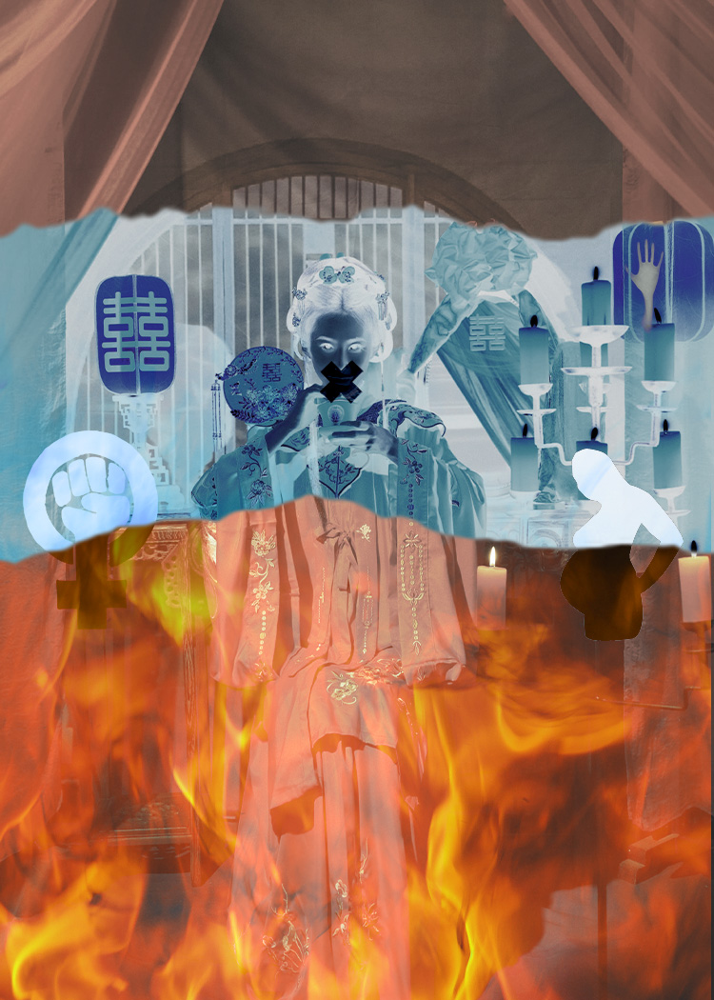

The second picture I want to portray more of a Chinese Horror aesthetic, where it focuses on the color red, which is a celebratory color in Chinese culture, but also resembles blood. Throughout history, many women were raised with the end goal of being married and entering a life of emotional or physical abuse. I wanted to portray this to focus on women’s rights of marriage, birth, and a life bond with moral kidnapped. The tape covering the bride’s mouth showed a sign that many women stay silent due to social pressure or are even forced to remain silent by their partner. I used the Layer mask with a gradient to make it look like the bride is burning in the fire. I also changed the color of the background from bright red to a faded black and white, like memories and old photo style, using hue/saturation and Vibrance from the blending mode.
